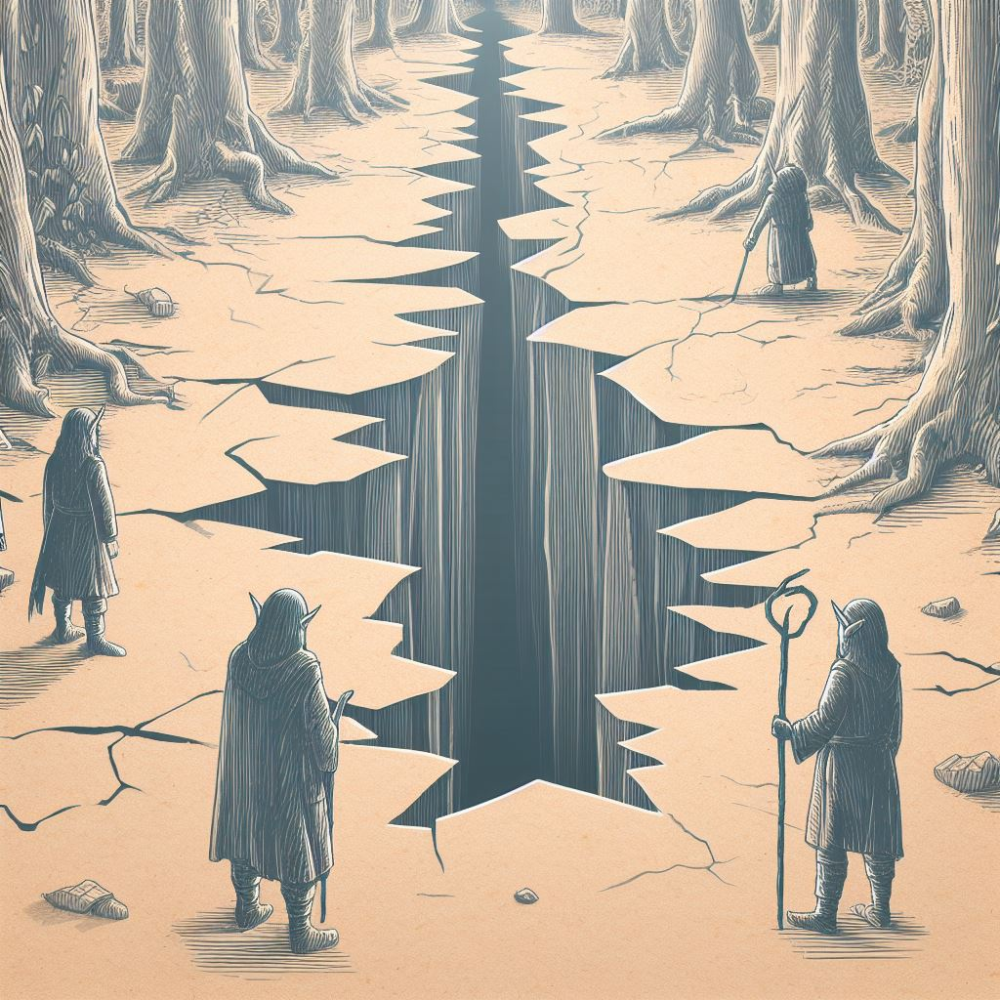

Capitol City residents are puzzled by unusual seismic ripples beneath their feet.
The mysterious earthquakes have sparked curiosity and some concern. The Honor Guard assures no immediate danger, but the strange underground phenomena have triggered speculation ranging from magic to subterranean creatures.
Emergency teams are on standby while the Keeper and Chancellor Galandor lead the investigation, turning the city into a stage for an unfolding geological mystery. Stay tuned for updates.